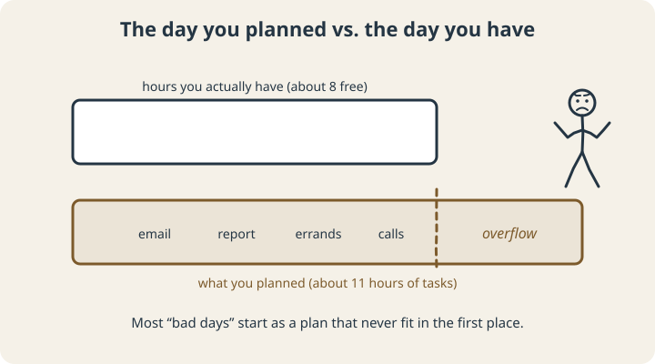
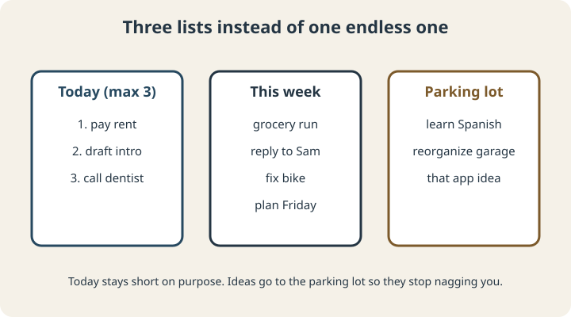

September 23, 2026
ADHD Time Management: Strategies That Work With Your Brain

Most time-management advice assumes one thing: that you can feel time passing and keep a plan in your head while you work through it. Make a prioritized list, estimate each task, work down the list. Simple.
With ADHD, every step of that has a catch. The list gets made and forgotten. The estimates come out short. The priorities shift the moment something more interesting shows up. So the advice fails, and people conclude they’re bad at time management, when the method was built for a different kind of brain.
This post covers what tends to go wrong, what research on adult ADHD treatment actually teaches about time, and a set of strategies built for how ADHD brains work.
Why the usual advice falls apart
Time is hard to feel
Many people with ADHD have trouble sensing time passing and estimating how long things take. We covered the research in detail in our post on time blindness. If you can’t feel an hour going by, a schedule that depends on noticing the time is going to slip.
Everyone underestimates, and ADHD adds to it
People in general are optimistic about how long tasks take. In one classic study, students expected to finish their thesis in about 34 days; it took them about 55.1 Stack that ordinary bias on top of time blindness and a to-do list quietly turns into a day that can’t possibly fit.

Plans live in working memory
A plan you’re holding in your head competes with everything else in there. For ADHD brains, the plan often loses. That’s why systems outside your head matter so much.
What the research teaches
Two of the best-known clinical trials of therapy for adult ADHD were built largely around time management and planning skills.
- A 12-week group program focused on time management, organization, and planning improved inattention more than supportive therapy did, including in ratings by evaluators who didn’t know which group each person was in.2
- A 12-session CBT program for adults already on medication taught calendar and task-list systems, breaking large tasks into steps, and matching tasks to attention span. About two-thirds of participants improved meaningfully, compared with about one-third in the comparison group.3
The skills in those programs are practical and learnable: one calendar, one task list, tasks broken into small steps, and planning ahead instead of in the moment. None of them depend on suddenly developing a better internal sense of time.
Strategies that fit an ADHD brain
1. Use one calendar and one list
Every extra place a commitment can hide is a place it can get lost. Pick one calendar for anything with a time attached, and one list for everything else. Check both at the same moments every day, like with morning coffee and before shutting the laptop.
2. Split the list three ways

A single long list is overwhelming and hard to act on. Try three:
- Today: no more than three things that must happen. If they’re done by noon, great, pull more from the week list.
- This week: everything with a real deadline in the next seven days.
- Parking lot: ideas, someday projects, and things you want to remember. Writing them down gets them out of your head without adding them to today.
3. Budget your hours before you promise them
Before committing to a day, add up the time estimates for everything on Today, then add 50%. Compare that with the hours you actually have free after meetings, meals, and travel. If it doesn’t fit, move something now instead of discovering at 6 p.m. that it was never going to happen.
4. Break tasks until the first step is obvious
“Do taxes” isn’t a task you can start. “Find last year’s return and put it on the desk” is. Keep breaking a task down until the first step takes under ten minutes and needs no decisions. This was one of the core skills in the CBT trial above, and it also helps with getting started.
5. Set alarms for transitions
An alarm at 2:00 for a 2:00 meeting is too late. Set it for when you need to start wrapping up what you’re doing, with a label that tells you what comes next: “1:45, save your work, find the meeting link.”
6. Decide the when and where in advance
“I’ll work on the proposal this week” tends to evaporate. “Tuesday at 10, at the kitchen table, I’ll outline the proposal” tends to happen. Plans in that if-then form have a medium-to-large effect on follow-through across many studies.4
7. Hold a short weekly review
Once a week, spend 15 minutes looking at the coming week’s calendar, updating the week list, and pulling anything urgent out of the parking lot. It’s the habit that keeps the other six working, and it’s the one most people drop first, so put it on the calendar like an appointment.
Start small
You don’t need all seven at once. Pick the one that matches where your days usually break down. If you’re always late, start with transition alarms. If you’re always overwhelmed, start with the three lists. If your days never fit, start with budgeting your hours. Give it two weeks before judging it, and expect to adjust it.
If you want a number to plan with, the free time blindness calibrator compares your instinctive estimates against realistic benchmarks and gives you a personal correction factor you can use when you budget your day.
Scope note: This article is educational. It isn’t a diagnosis, and coaching isn’t a substitute for medical or psychological care.
Sources
- Buehler, R., Griffin, D., & Ross, M. (1994). Exploring the “planning fallacy”: Why people underestimate their task completion times. Journal of Personality and Social Psychology, 67(3), 366–381. doi.org/10.1037/0022-3514.67.3.366
- Solanto, M. V., Marks, D. J., Wasserstein, J., Mitchell, K., Abikoff, H., Alvir, J. M. J., & Kofman, M. D. (2010). Efficacy of meta-cognitive therapy for adult ADHD. American Journal of Psychiatry, 167(8), 958–968. doi.org/10.1176/appi.ajp.2009.09081123
- Safren, S. A., Sprich, S., Mimiaga, M. J., Surman, C., Knouse, L., Groves, M., & Otto, M. W. (2010). Cognitive behavioral therapy vs relaxation with educational support for medication-treated adults with ADHD and persistent symptoms: A randomized controlled trial. JAMA, 304(8), 875–880. doi.org/10.1001/jama.2010.1192
- Gollwitzer, P. M., & Sheeran, P. (2006). Implementation intentions and goal achievement: A meta-analysis of effects and processes. Advances in Experimental Social Psychology, 38, 69–119. doi.org/10.1016/S0065-2601(06)38002-1